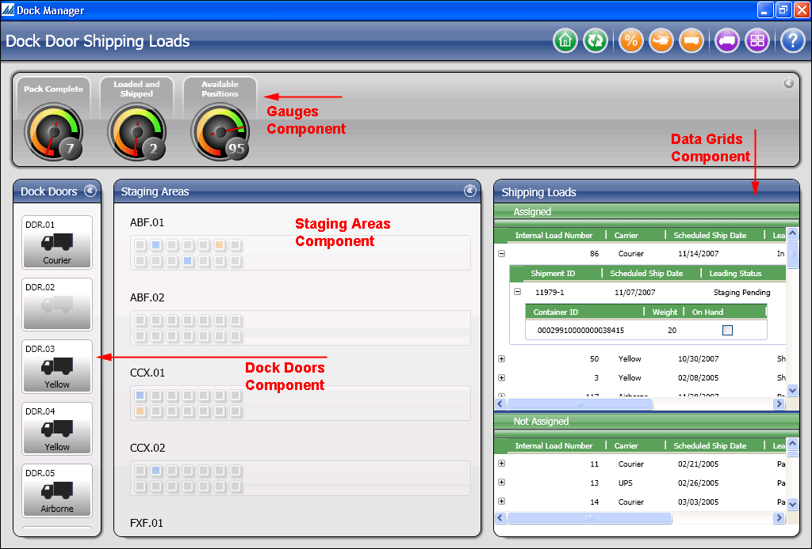

Using the Dock Manager Window
The Dock Manager Window provides a high-level, overhead view of the dock locations on your warehouse's shipping dock. Using this window, you can perform several actions to better manage the shipping containers residing in staging areas, or the loads that are being shipped from your dock doors. This window also provides you with detailed information regarding these loads/shipments/containers, which you can use to research activity occurring on your shipping dock. There are four main components (sections) of the Dock Manager Window: gauges, data grids, staging areas, and dock doors:
The Gauges component allows the user to track the progress and efficiency of several key indicators of your warehouse's outbound flow. The system ships with three gauges (located at the top of the Dock Manager Window): Pack Complete, Loaded and Shipped, and Available Positions (see Researching Data On The Dock Manager Window for more specifics). A shipping dock manager could use the data represented on these gauges to better manage the daily dock work remaining (such as how many shipments remaining to go through the packing process, or the number of shipments that have shipped from the warehouse today).
The Data Grids component displays detailed information about loads/shipments/containers that are either currently present at a dock location, or soon destined to arrive at the shipping dock. The grids are composed of a number of field columns, which you can sort/group in order to make the values easier to review. You can also drag-and-drop entities from the data grid to areas on the shipping dock (such as assigning a load to a dock door, or transferring a container from one staging area to another).
The Staging Areas component represents graphically your dock's staging areas and their positions (both of which are created on the Location Window and are inventory-tracked). Using this window, you can perform several actions that will assist you in organizing outbound shipping containers in these locations (such as researching what is currently residing in these areas/positions, and what is destined to arrive there).
The Dock Doors component represents graphically your dock's actual "doors" (which are created on the Location Window and inventory-tracked) where a carrier's trailer is parked. The Dock Manager Window allows you to view the details of what shipments/containers are assigned to a particular load. This window also features several actions that will assist you in managing the loads that will be shipped from your warehouse (such as researching loads assigned to dock doors, assigning loads to dock doors, etc).

Related Topics...
Dock Management Process Summary
Dock Management Setup
Dock Manager Window Setup Prerequisites
CLICK HERE to view a reference guide for the various buttons featured on the Dock Manager Window.
Assigning/Transferring Entities To Dock Locations On The Dock Manager Window
Researching Data On The Dock Manager Window
Processing Dock Management Work
RF Consolidation
RF Immediate Dock Transfers (Without Work)
Dock Manager Window: Global Features...
Below is a list of the general properties that apply to most or all of the Dock Manager Window components:
- You can refresh component data manually by pressing the F5 button or the toolbar's Refresh Button. Note that the system does not automatically refresh data.
- You can minimize most components by selecting the << button at the top right of a component title bar. The component then will hide itself on the left side of the Dock Manager Window. If you press the Home Button (or exit and re-enter the window), all the components will return to their original maximized state.
- You can resize components to any width you choose.
- The system will display dock doors/staging area names sorted alphanumerically by their location ID.
- If there are more doors/areas/gauges than a component has room for, you can scroll through the items by hovering your mouse cursor over a component until a four-pronged arrow appears. Then you can select and hold the mouse button to "grab" and "drag" the component area up/down. You can also use the keyboard arrow keys, the "page up" and "page down" keys, or the mouse wheel button to scroll.
Dock Manager Window: Gauges...
The following descriptions only apply to the gauges component:
- Each gauge value is color-coded so that red represents a low percentage, yellow represents a medium percentage, and green represents a high percentage.
- If the system has a problem processing a gauge percentage, it will display this value as a red-colored 0. In addition, when you hover your mouse over this gauge, it will display an error message. After an error occurs, the system automatically attempts to recalculate this value three additional times. If none of these attempts are successful, you can then force additional recalculations by performing a manual data refresh (by pressing the Refresh toolbar button or the F5 button).
- Note that there is no processing tied to the gauge values. This data is for research purposes only.
- It is possible to customize the gauges, such as modifying a gauge's title, assigning different calculation formulas, or adding new gauges. The SCALE SDK contains procedures on how to do this. Note that only a technical resource should attempt this type of modification.
Dock Manager Window: Data Grids
The following descriptions only apply to the data grids component:
- The Dock Manager Window features two types of data grids: the Shipping Loads grid and the Positions grid. The system will display these grids on the component located on the right side of the window.
- The system does not initially display the data grids component. You will need to press the appropriate toolbar button in order for a data grid to appear.
- To drag-and-drop an entity from a data grid, you will need to select the item with your mouse once, so that the row is highlighted. Then, select the row again and hold the mouse button down. You can then drag-and-drop the item to its destination.
- Each time you open the Dock Manager Window, the data grid field columns will revert to their default size. Even though you can resize these columns manually, the system will not remember the size of them up re-entry. You can, however, set these default field column sizes in the database. A technical resource should configure this, see the SCALE SDK for details.
- It is possible to modify or add field columns to the data grid. A technical resource should configure this, see the SCALE SDK for more details.
- Shipments assigned to staging areas (not to specific positions) will be listed in the "Not Assigned Positions" section of the grid, when they are assigned to an area and not a specific position.
Dock Manager Window: Staging Areas
The following descriptions only apply to the staging areas component:
- When you initially open the Dock Manager Window, staging areas are first represented as solid, long rectangular bars. When you select an area, however, the bar will be highlighted, and will morph into several small squares (which represent an area's positions). If an area has no positions assigned to it, the bar will remain solid.
- All staging areas will appear graphically on the screen to be the same length, regardless of the number of positions actually assigned to that staging area. The bar will only appear longer if the staging area has more positions than would fit into the default bar size.
- The system determines the number of position rows that are displayed for a staging area by referencing the value of the Number of Rows Field (defined on the Location Window).
- The system calculates the length of a position row also by using the Number of Rows Field. The system divides the total number of positions for an area by the number of rows to determine each row's length.
- Staging locations in SCALE can represent two types of spots on your shipping dock: a staging area, where entities are placed before they are loaded onto a trailer, and a pack-and-hold area, where entities are held to be shipped on a future date.
Dock Manager Window: Dock Doors
The following descriptions only apply to the dock doors component:
- When you select a dock door, it is highlighted with an orange color. Note that this color does not indicate the status of a load.
- When you assign a load to a dock door, the button is accentuated and the carrier associated with it is displayed below the door's truck icon.
- When a dock door is not assigned to a load, then its button appears faded into the window's background, with no carrier name displayed.
- When a load is confirmed, the button fades into the background, and the carrier name is removed.